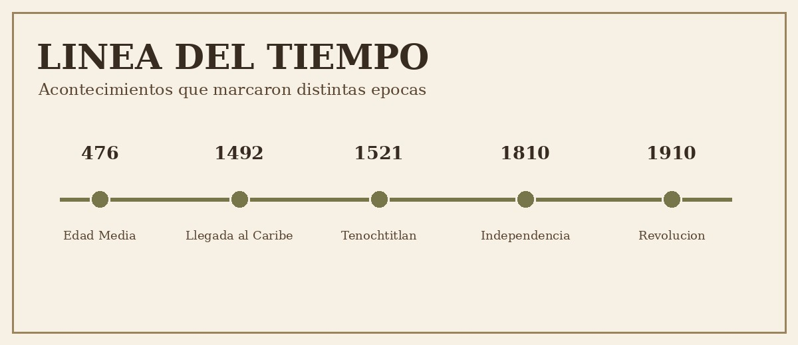

Linea del tiempo
Estos son algunos acontecimientos importantes.

3100 a. C.
Se unifico el antiguo Egipto y se desarrollo una gran civilizacion.
476 d. C.
Cayo el Imperio romano de Occidente, fecha que se usa para marcar el inicio de la Edad Media europea.
1492
La expedicion de Cristobal Colon llego al Caribe.
1521
Cayo Mexico-Tenochtitlan.
16 de septiembre de 1810
Inicio de la lucha por la Independencia de Mexico.
27 de septiembre de 1821
Se consumo la Independencia de Mexico.
20 de noviembre de 1910
Inicio de la Revolucion Mexicana.